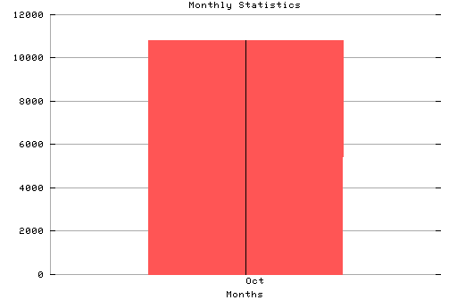

HTTP Server Monthly Statistics Covers: 10/23/95 to 10/26/95 (4 days). All dates are in local time. Oct (10/23/95): 10813 : ########### Statistics generated at Thu Oct 26 07:32:34 MET 1995, (C) Oslonett AS, 1995.
Statistics generated at Thu Oct 26 07:32:34 MET 1995, (C) Oslonett AS, 1995.